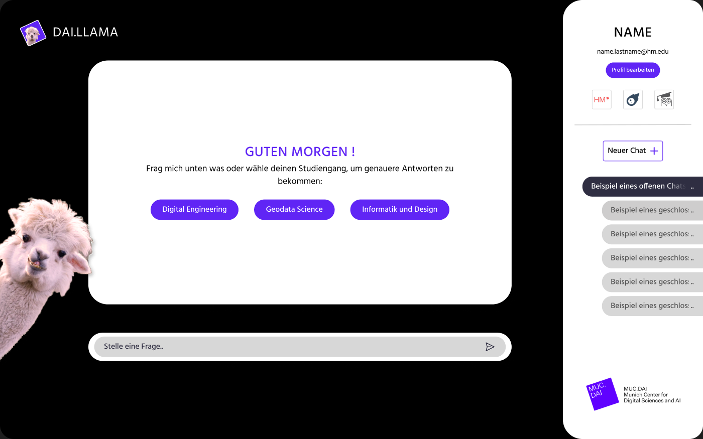
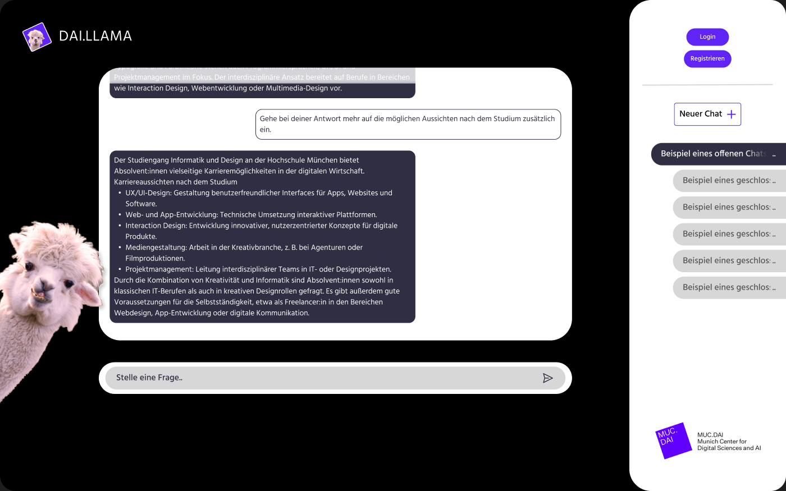
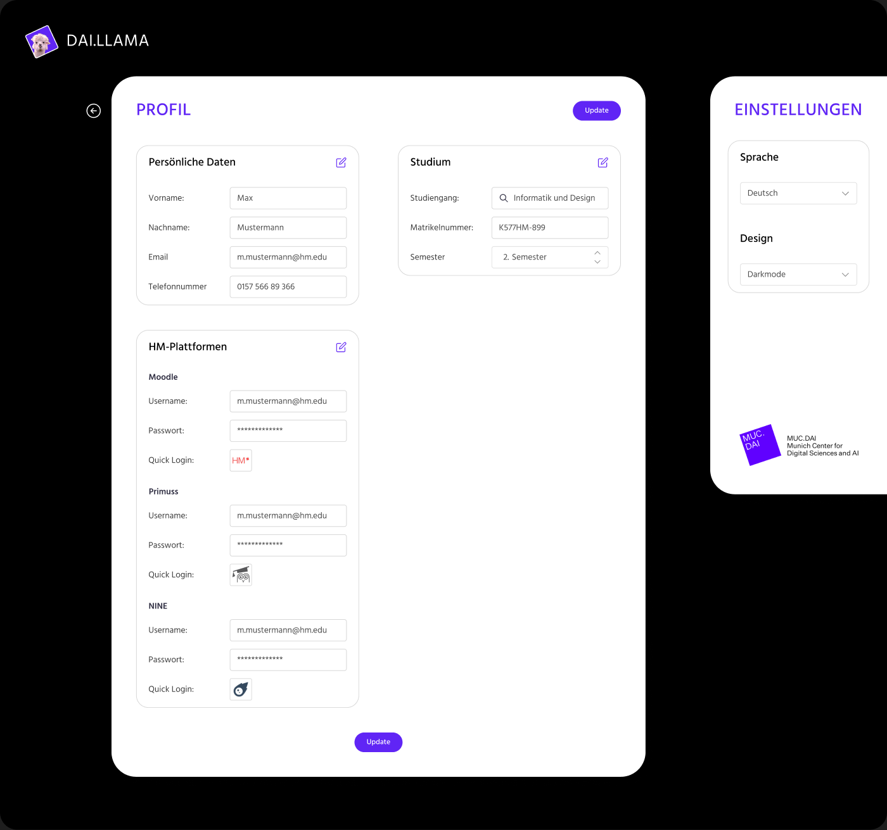
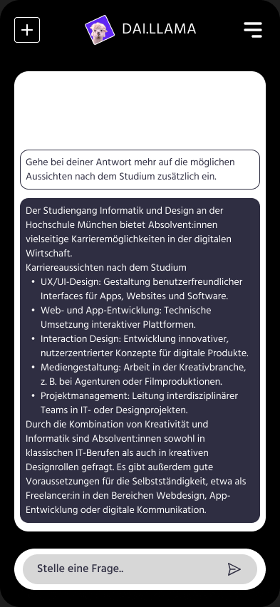

Higher Education
UX Teaching
Design Thinking
Curriculum Design
Conversational & AI UX
2023–2025
3
Semesters as lecturer, back to back
Research → Prototype
Full design-thinking cycle taught end-to-end
AI Chatbot
Flagship final-project format, WS 2024/25
Context & Role
Stepping into the classroom, part-time.
Alongside my work as a product designer, I took on a Lehrauftrag (a part-time teaching mandate) at Hochschule München, in the Informatik und Design program (a joint computer-science-and-design degree). Over three consecutive semesters I ran the weekly Projektmodul seminar: the course where students apply UX and product-design methods to a real project brief for the first time.
Designing the curriculum
Planned and structured each semester's session sequence (Termine) myself, from kickoff through to final critique, and adapted the syllabus every term based on what the previous cohort struggled with.
Building original teaching materials
Created my own slide decks, worksheets and Figma/FigJam canvases for each session, rather than reusing generic design-thinking templates, so students would work in the same tools and formats used in industry.
Coaching student teams
Guided small project teams through research, ideation and prototyping in weekly working sessions, and assessed final deliverables against a structured evaluation rubric.
Teaching Approach
Make the studio feel like a real design team.
The course only runs for one semester, so the biggest design challenge wasn't the content: it was pacing an entire product-design cycle, research through prototype, into a compressed, weekly rhythm without losing rigor. My approach across all three semesters:
Structure the semester as a single sprint with clear milestones (kickoff, research, synthesis, ideation, prototyping, critique) instead of a series of disconnected lectures.
Teach every method through the professional tool students would use it in (FigJam for research synthesis, Figma for prototyping) instead of worksheets in isolation.
Treat each session (Termin) as a self-contained input + hands-on exercise, so teams left every class having produced something, not just having heard about a method.
Iterate the syllabus every semester: content moved from general web & interface basics toward a full, AI-inflected design-thinking process as I learned what each cohort needed.
Three Semesters
From web basics to AI product design.
Each semester built on the last, not repeating the same syllabus but progressively deepening the process students were taught.
WS 2023/24
Web & Game Design Foundations
First run of the Projektmodul: web-design fundamentals and a game-design unit, establishing the session format and kickoff structure I'd refine in later semesters.
SoSe 2024
AI Innovation & Prototyping
Shifted focus toward AI innovation and hands-on prototyping, with input sessions on typography, iconography, navigation concepts and responsive design.
WS 2024/25
Full Design-Thinking Cycle
Most complete version of the course: user research through synthesis, storyboarding, prototyping and accessibility, culminating in a student-built AI chatbot concept.
WS 2024/25, In Detail
The design-thinking sprint I taught.
In the most recent semester, I ran the Projektmodul as a complete, compressed design-thinking sprint. Each numbered session (Termin) had its own input and exercise, building directly on the last:
Termin 3 · User Research
Introduction to qualitative research methods; teams planned and ran their own interviews.
Termin 4 · Synthesis
Turning raw research into personas and problem statements as a shared team artifact.
Termin 5 · Storyboarding
Visualizing the target experience before any UI work began, to keep concepts user-need-driven.
Termin 6 · Sprint Retro
Mid-course checkpoint: teams reviewed progress and re-scoped for the remaining weeks.
Termin 7 · MVP & Branding Sprint
Defining a minimum viable concept and giving it a coherent visual identity.
Termin 11 · Accessibility & Usability
Closing input on accessibility, usability heuristics, and designing for a "digital home", applied as a final pass on each team's prototype.
Student Work
What one team shipped: an AI study advisor.
One WS 2024/25 team designed “DAI.LLAMA”, an AI chatbot concept to help prospective students choose between Hochschule München's Informatik-und-Design degree programs. Working through the full sprint above, the team took it from research to a polished, prototyped interface in Figma.
Shown here as an anonymized example of the process outcome; the work and its interface design belong to the student team, not to me.




Student project · “DAI.LLAMA”, an AI study-advisor chatbot · WS 2024/25
Reflection & Learnings
What teaching taught me.
Three semesters in front of the same course forced me to translate everything I do intuitively as a practicing designer into something explicit, sequenced and teachable, which sharpened my own process as much as it did my students'.
Process over templates
The syllabus that worked best wasn't the one with the most methods: it was the one that mirrored a real sprint closely enough that students could feel the cause and effect between research and design decisions.
Meeting students where AI already was
By WS 2024/25, students were already using AI tools daily; the course worked better once it treated that as a starting point for critical design thinking, rather than something to introduce from scratch.
Iterating the course like a product
Each semester's syllabus was a direct response to where the previous cohort got stuck, treating the curriculum itself as something to prototype and improve, not a fixed deliverable.